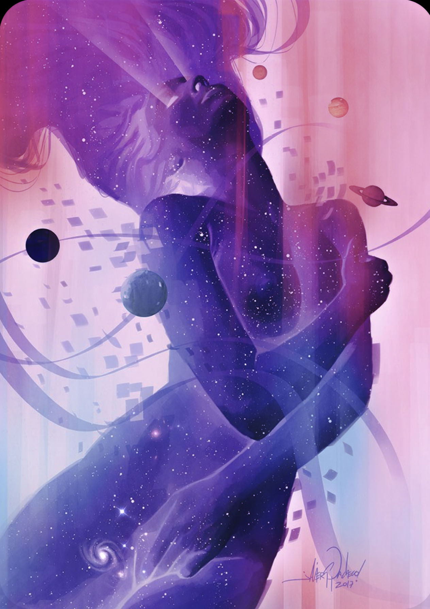

We Truly Do Run The World
Feminine
The Divine
The Divine Feminine is the feminine aspect of the divine power that connects and binds the Earth together. In other words, it is the goddess energy that exists within all of us. Many ancient cultures have a Divine Feminine concept; the Egyptians had Isis, the Greeks had Aphrodite, and the Hindus have Shakti.
Divine Feminine is the spiritual concept that there is a feminine counterpart to the patriarchal and misogynist worship structures that have long dominated our physical world; it extends well beyond one belief system, and instead can be used as a spiritual lens to balance our perspective and bring harmony, love, and light into our life.

By Doja Cat
By Ariana Grande
By Lana Del Ray